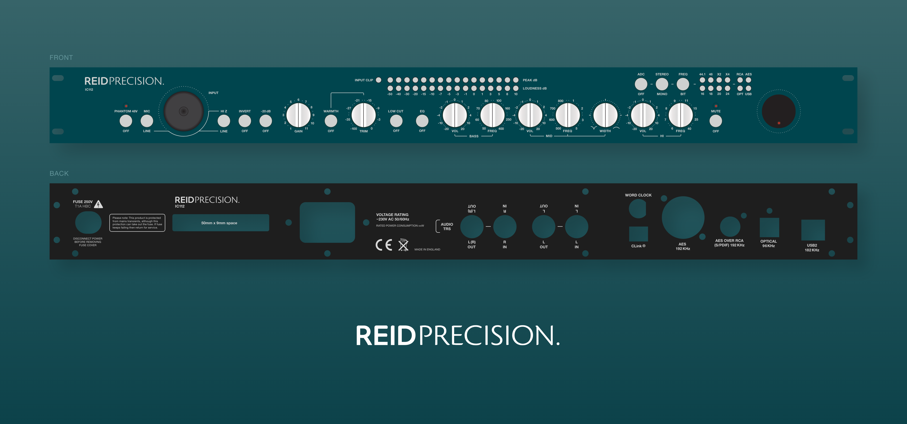
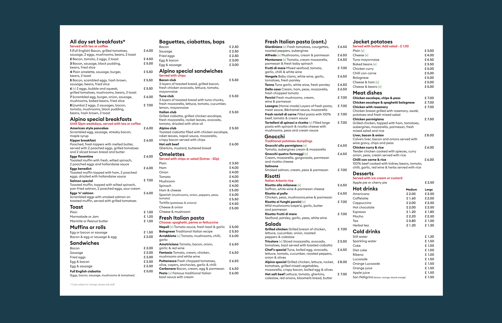
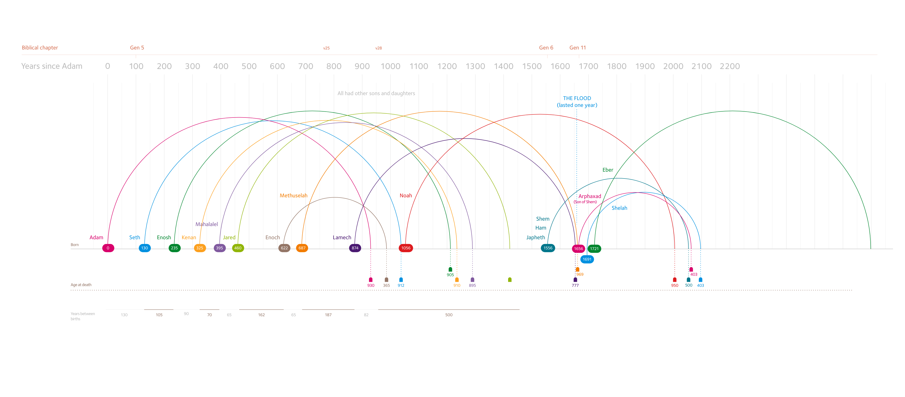
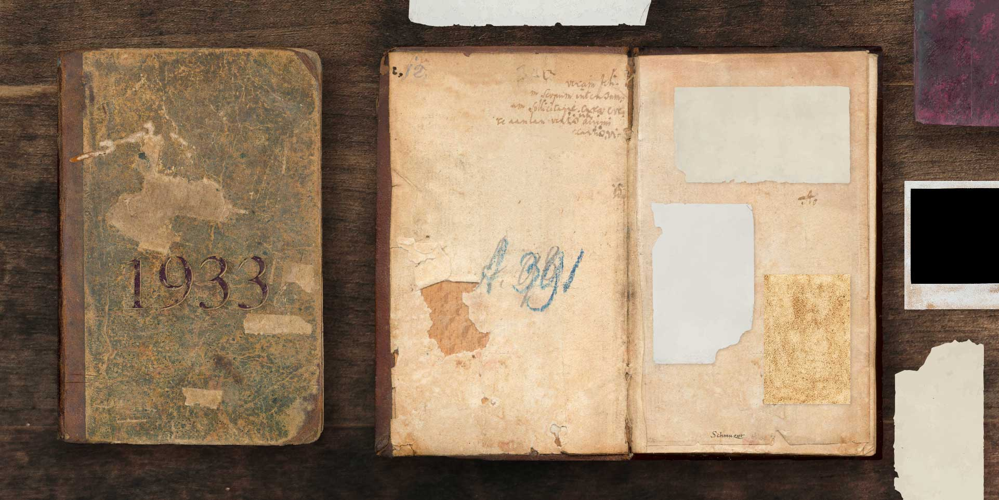

A few examples of my work which do not fit logically anywhere else: book covers, audio components, infographics; my approach to design and visualising information is medium and sector agnostic.
I designed this book cover for my friend Brad, he had recently lost his wife and had written a book to help others through the journey of loss. It features a wonderful image by Corey Arnold. I adjusted the feel of the shot making it harsher, more troublesome, adding some ferocious sky and adjusting the contrast and colour to balance the typography. These steps are shown in the animation below.

These audio panels (and logo) I designed for my friend, for an audio component he was launching. I used the CAD blueprint - which defines where the metalwork would be machine-punched - for measurement, to make sure all the design work was correct and to scale.

My favourite local Italian café had a menu that I would describe as ‘typographically challenged’, yet the food was so delicious and full of love. I found this incongruity difficult to live with, so I suggested to the owners, my friends, that I should help them with their menu. The result is what you see above. I can eat my pasta in culinary (and typographic) bliss now.

A project that I thought would be fun: Creating an infographic plotting the births and deaths of all the people in the Bible. This is work in progress.

I was asked to generate a scene for a film that displayed an old book from 1933 that would house various photos and memorablia. Using a patchwork of scraps, some photography of old items and some Photoshop assistance, I created this scene.
Logotype for a local youth club. All letter forms created completely from scratch. I think it is typographically exciting!